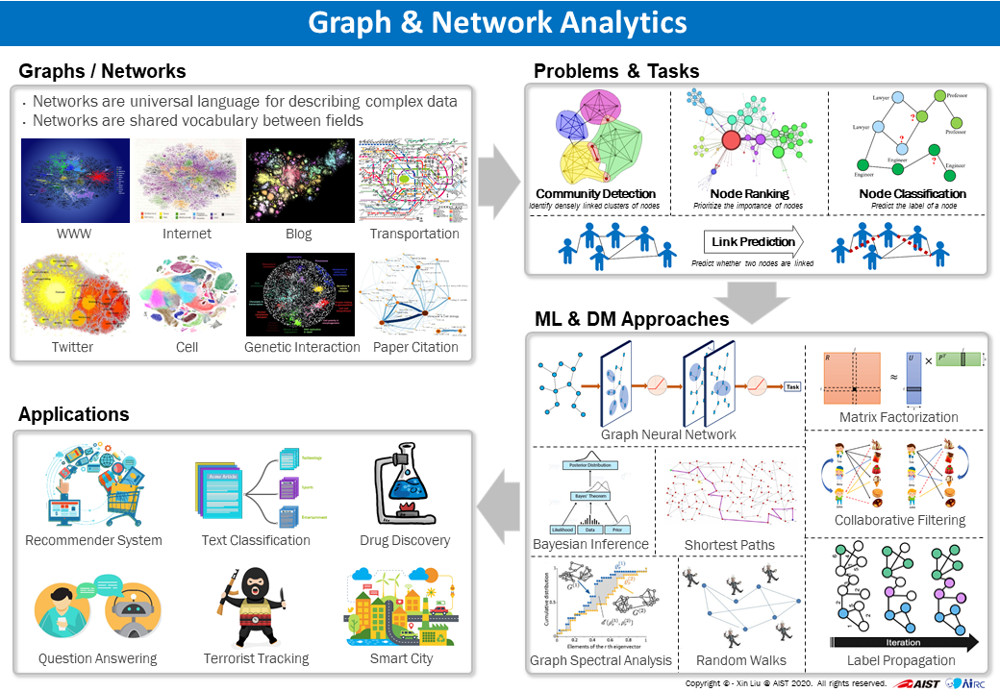

About Me
I am a senior researcher (tenured) at Data Platform Research Team, Artificial Intelligence Research Center (AIRC), National Institute of Advanced Industrial Science and Technology (AIST), Japan.
I received Ph.D. in computer science from Tokyo Institute of Technology and M.Sc in computer science from Wuhan University. Before joining AIST, I was an assistant professor at National Institute of Informatics (NII) and a postdoctoral fellow at Tokyo Institute of Technology.
My primary research interests lie in machine learning and data mining for graph-structured data, with a focus on graph analysis, graph learning, network science, and web recommendations. I specialize in developing automated machine learning and data mining algorithms to uncover actionable patterns in interconnected systems, contributing to fields such as social informatics, bioinformatics, and information security.
[Open Positions]
Opening for a few postdoctoral fellows working on graph learning and graph data management. Please see here for more details. Please feel free to email me if you require any further information.
We are looking for RAs / interns, visiting Ph.D. students, and Ph.D. candidates. Please find more information here.
